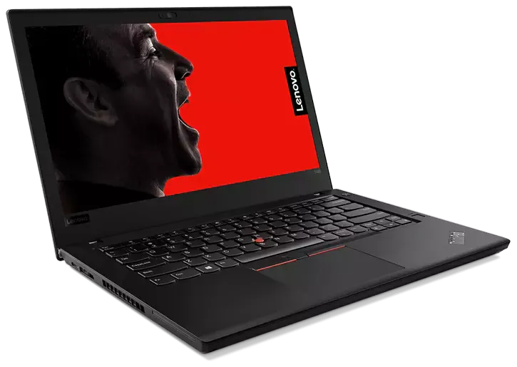

Visión General
El Lenovo ThinkPad T480 es una potente herramienta de trabajo, diseñada para la movilidad y la productividad en el mundo empresarial. Con un chasis duradero, una potente configuración de hardware y una impresionante duración de la batería, es una elección sólida para profesionales en constante movimiento.
Especificaciones
- Procesador: 8th Gen Intel Core i5 / i7
- RAM: Hasta 32GB DDR4
- Almacenamiento: Hasta 1TB SSD
- Pantalla: 14 pulgadas FHD (1920x1080) IPS
- Gráficos: Intel UHD Graphics 620
- Conectividad: Wi-Fi 802.11ac, Bluetooth 4.1
- Puertos: 2 x USB 3.0, 1 x USB-C, 1 x HDMI, 1 x Ranura para tarjeta SD
- Sistema Operativo: Windows 10 Pro
- Batería: Hasta 14 horas de duración
- Peso: Aprox. 1.58 kg
Comprar Ahora
Obtén tu Lenovo ThinkPad T480 hoy mismo y lleva tu productividad a otro nivel.
Comprar AhoraMás Información
El ThinkPad T480 se destaca por su teclado ergonómico, resistente al derrame de líquidos, y su robustez general. Ofrece una combinación perfecta de rendimiento, durabilidad y portabilidad, convirtiéndolo en la elección preferida para profesionales móviles y entornos empresariales exigentes.
Reseñas
"El T480 es el compañero perfecto para mis viajes de negocios. Su batería de larga duración y su potencia son impresionantes." - Usuario Satisfecho
"La durabilidad y la calidad de construcción del T480 son excepcionales. ¡Lo recomiendo completamente!" - Otro Usuario Feliz